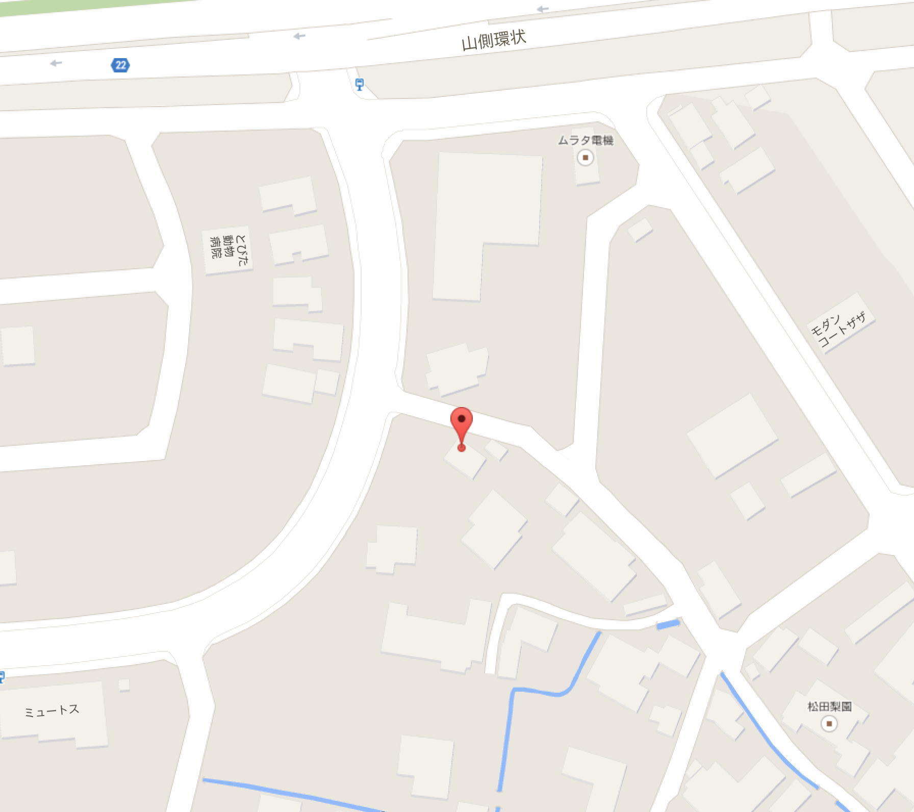

<!--
    基本ここをコピーして新しいhtmlを作成し、適時ページタイトルを編集し、menu.htmlにコピーして作成したhtmlを追加する。
-->
<ons-page>
    <ons-toolbar>
        <div class="left">
            <ons-toolbar-button ng-click="menu.toggleMenu()"><ons-icon icon="fa-bars"></ons-icon></ons-toolbar-button>
        </div>
        <div class="center">MAP</div>
    </ons-toolbar>

        <!-- ここに記述していく -->
            <ons-col width="95px">
             
    
</div>
</ons-page>


